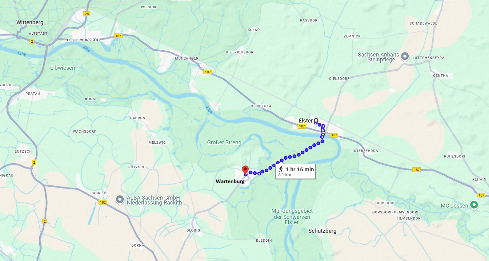
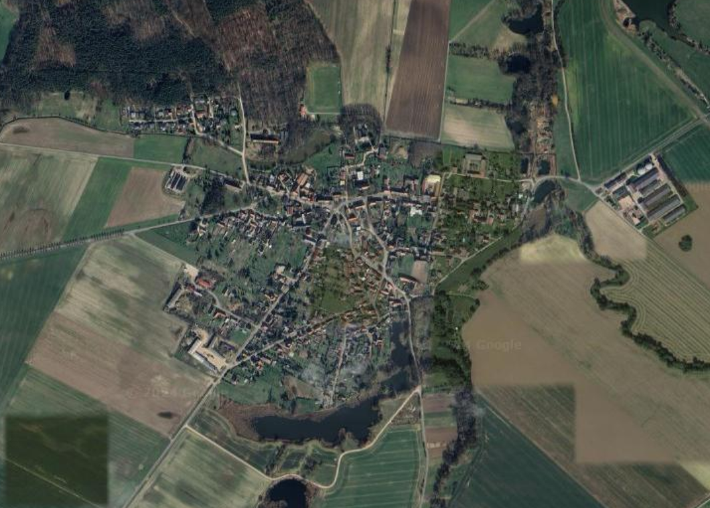
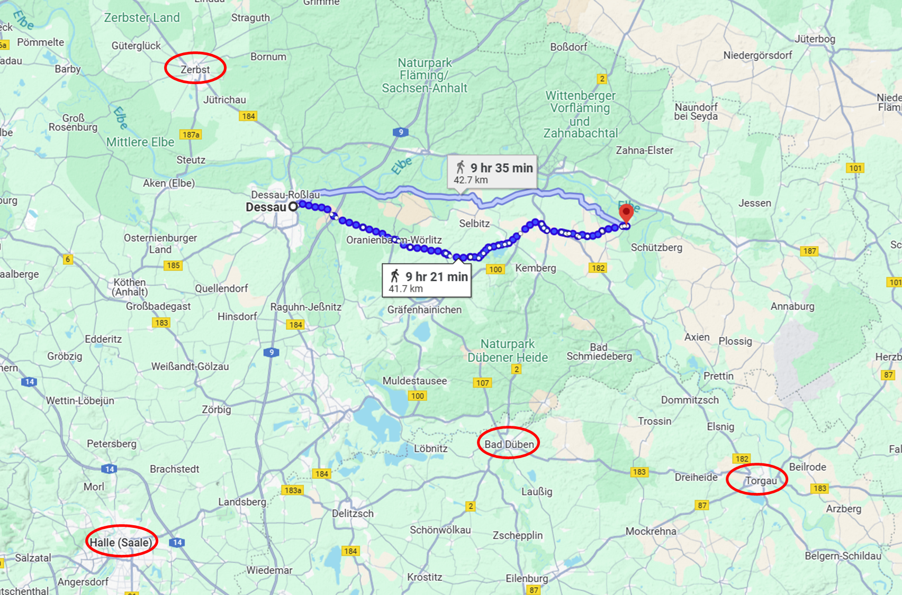
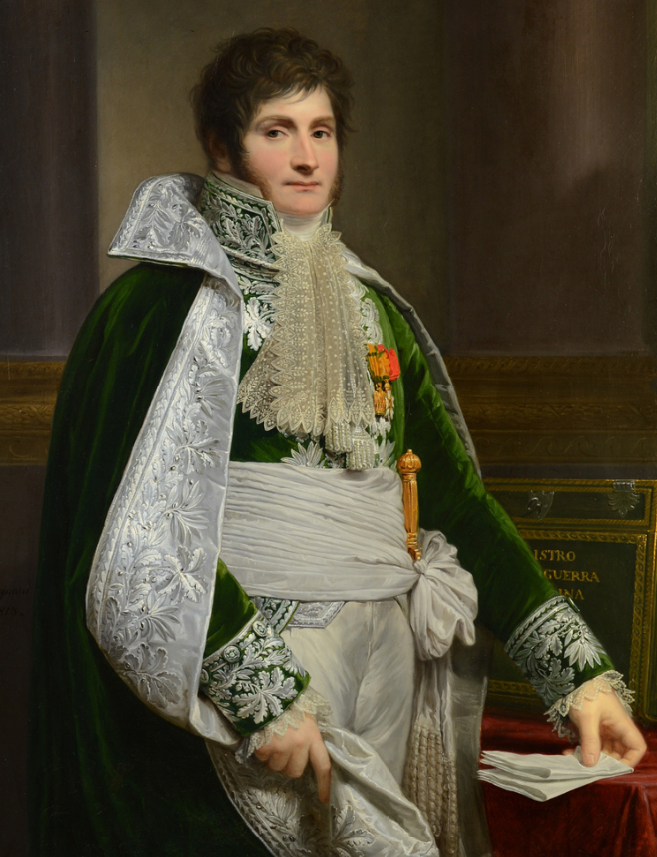
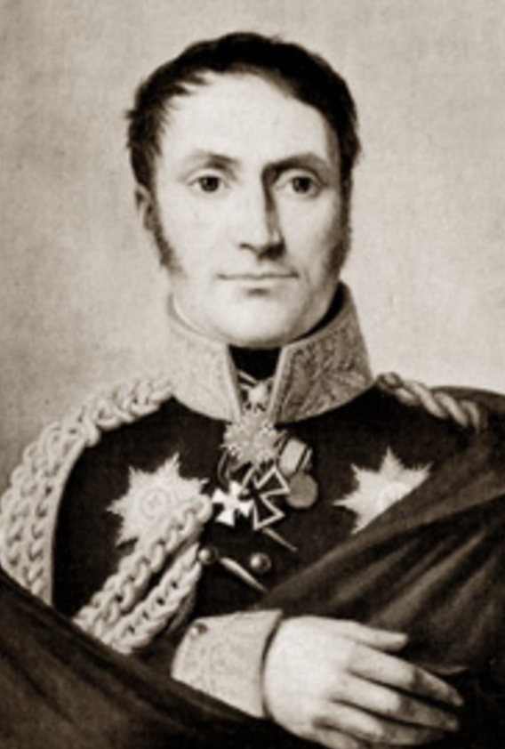
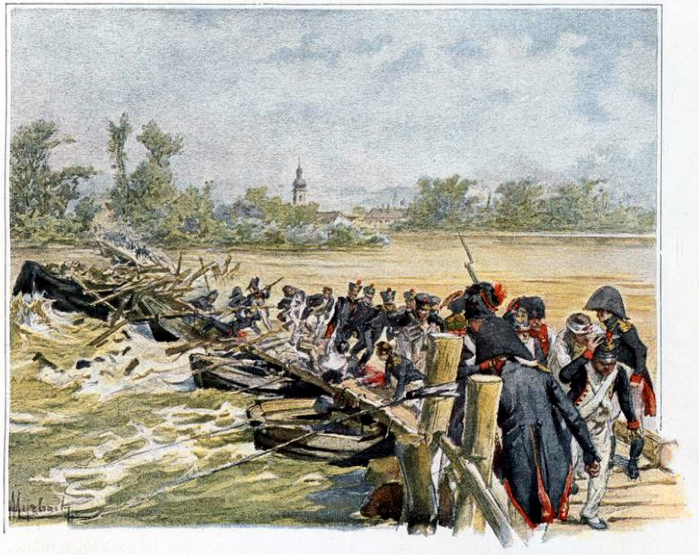

라이프치히로 가는 길 (8) - 나사가 빠진 원수
게시: 2024-12-16T06:30:57+09:00
뷜로가 엘베강에 놓은 다리는 우안에 엘스터(Elster) 마을을 끼고 있었습니다만, 강의 좌안에도 뭔가 교두보를 가지고 있어야 했습니다. 프로이센군은 엘스터 마을 건너편의 바르텐부르크(Wartenburg)를 점령하고 거기에 소규모 병력을 배치해놓고 있었습니다. 9월 22일, 네의 명령을 받은 모랑 사단이 들이친 곳은 바로 바르텐부르크 마을이었습니다. 여기엔 헬빅(Hellwig)이라는 이름의 소령이 거느리는 소규모 프로이센군 밖에 없었으므로, 모랑은 손쉽게 바르텐부르크 마을을 점령했습니다만, 헬빅의 부대는 동쪽의 뺵뺵한 숲 속에 들어가 계속 머스켓 소총을 쏘며 저항했습니다.

(엘스터 마을과 바르텐부르크 마을은 보시다시피 걸어서 1시간 정도 거리에 있습니다. 저 북서쪽에 포위된 프랑스군의 요새 비텐베르크가 보입니다.)

(바르텐부르크는 이름에 성벽을 뜻하는 burg가 들어가긴 합니다만, 지금도 저렇게 작은 농촌 마을에 불과합니다.) 여기서 그냥 그대로 밀어붙였다면 모랑은 엘스터 마을의 다리를 손쉽게 점령하고 부술 수 있었을 것입니다. 그러나 바르텐부르크 마을에서 잡은 프로이센 포로들은 지금 이 순간에도 뷜로의 군단이 그 다리를 건너고 있다는 진술을 했습니다. 다리까지는 불과 2~3km 밖에 안 되었으므로 모랑이 기병 몇몇을 보내어 정찰을 해보았다면 그게 사실이 아니라는 것을 쉽게 알 수 있었을 텐데, 그때 즈음해서는 그랑다르메 안에 패배주의가 팽배했던 것인지, 평소 꽤 유능한 장군이었던 모랑은 그 일대의 지형만 살펴보고는 이런 곳에서 뷜로의 군단급 병력을 상대하는 것은 크게 불리하다고 생각하고는 오히려 바르텐부르크를 포기하고 물러나 버렸습니다. 거기서 네에게 요청한 증원군을 기다리자는 생각이었습니다. 그걸 보고 헬빅 소령은 재빨리 바르텐부르크 마을을 재점령했습니다. 한편, 네도 바빴습니다. 모랑을 바르텐부르크로 보내 놓고, 네 본인은 휘하 군단들을 이끌고 데사우(Dessau)로 향할 생각이었습니다. 실은 엘스터 마을의 다리보다 데사우에 놓인 다리들이 더 큰일이었기 때문이었습니다. 거기엔 베르나도트의 본진이 자리를 잡고 엘베강은 물론 그 지류인 묄더강에까지 다리를 놓은 상태였습니다. 그러나 데사우로 진격을 시작하기도 전에, 22일 밤~ 23일 새벽 나폴레옹으로부터 명령서가 날아들었습니다. 내용은 뷜로가 포위하고 있는 비텐베르크 방면에 병력을 집중시킬 것과 함께, 절대 토르가우에서 멀리 떨어지지 말라는 것이었습니다. 이는 네가 생각하던 데사우로의 진격을 사실상 금지하는 내용이었습니다.

(모랑이 점령했던 바르텐부르크와 데사우 사이는 꽤 멀어서 약 2일 행군 거리였습니다. 저때 당시 베르나도트 본인은 엘베강을 건너지 않았고, 그 북쪽인 제릅스트(Zerbst)에 사령부를 두고 있었습니다.) 나폴레옹의 이 명령은 당시 데사우 일대의 상황을 모른 상태에서 내려진 것이긴 했습니다만, 평소 그렇게 나폴레옹의 명령을 제대로 따르지 않았던 네는 희한하게도 이번에는 그 명령을 충실히 지키기로 하고 데사우로의 진격을 포기해버렸습니다. 대신 모랑의 요청에 따라, 베르트랑의 제4군단 휘하 폰타넬리(Achille Fontanelli) 장군의 이탈리아 사단 하나를 바르텐부르그 방면으로 보내주었습니다.

(폰타넬리 장군입니다. 나폴레옹보다 6살 연하였던 그는 원래 모데나(Modena)의 하급 귀족 출신으로서 오스트리아의 압제에 저항하는 민족주의자였는데, 1796년 나폴레옹이 쳐들어오자 21세의 나이로 모데나 시의 국민방위군에 자원 입대하면서 군 생활을 시작했습니다. 그는 뾰족하게 눈에 띄는 전공을 세우지는 못했으나 나폴레옹에 충성하는 인물이었고, 주로 외젠의 이탈리아 왕국에서 활약했습니다. 러시아 원정 때는 이탈리아 왕국의 국방부 장관직을 맡고 있어서 다행히 원정에 직접 참전하지는 않았습니다. 나폴레옹의 퇴위 이후에는 오스트리아군의 명예 계급을 받고 은퇴하여 조용히 살다가 62세의 나이에 암으로 병사했습니다.) 한편, 뷜로의 프로이센군에서도 모랑 사단의 출현으로 인해 난리가 났습니다. 23일, 뷜로는 모랑 사단이 나타나자 그 목적이 바로 인근에서 자신이 포위 중이던 비텐베르크(Wittenberg) 요새를 구원하려는 것이라고 생각하고는 헬빅 소령의 부대를 포함하여 엘베 강 우안의 더 동쪽에 전개되어 있던 보슈텔(Karl Leopold Heinrich Ludwig von Borstell) 장군의 프로이센 여단을 소집하여 엘스터 마을에 집결시켰습니다. 다시 하루가 지나 24일이 되자 뷜로의 프로이센 군단이 강을 건넜다는 것이 사실이 아님을 알게 된 모랑이 슬금슬금 전진하여 다시 바르텐부르크를 점령하고 강 건너의 엘스터 마을을 볼 수 있는 위치까지 왔는데, 망원경으로 보니 마을 안에 꽤 상당한 병력이 득실거리는 것이 훤히 보였습니다. 그날 저녁에 현장에 도착하여 전황을 살펴본 군단장 베르트랑도 엘스터 마을을 점령한 프로이센 전위대의 규모로 보아 강 건너에는 약 2만 규모의 적군이 곧 다리를 건너려는 것 같다고 네에게 보고했습니다.

(보슈텔 장군입니다. 나폴레옹보다 4살 연하였던 그는 고위 군장교였던 아버지의 후광으로도 승진은 꽤 느려서, 1810년에야 준장으로 진급했습니다. 그가 가장 유명해진 것은 1815년 나폴레옹의 백일천하 때 반란을 일으켰던 벨기에 주둔 작센 대대들의 주동자들에 대한 블뤼허의 처형 명령을 거부한 사건 때문입니다. 블뤼허는 대노하여 당시 군단장이던 보슈텔의 지휘권을 빼앗고 투옥했는데, 1달 뒤에 국왕 프리드리히 빌헬름이 사면해준 뒤에야 풀려났습니다. 그는 노년까지 프로이센군에서 고위직을 지내다 은퇴한지 3년 만에 70세의 나이로 베를린에서 죽었습니다.) 확실히 그로스베어런과 덴너비츠의 연패 때문이었는지, 이때 즈음 네의 베를린 방면군에는 패배주의와 불필요한 조심성이 팽배해 있었던 것 같습니다. 배르트랑의 보고를 받은 네도 엘스터의 다리를 파괴하는 것은 고사하고 당장 그 대군의 도강을 막아내는 것이 급선무라고 생각하게 되었고, 일단은 바르텐부르크에서 진지를 구축하고 적의 도강을 막는 것으로 작전을 바꾸었고, 25일에는 본인이 직접 바르텐부르크에 도착했습니다. 그러나 25일 하루 종일 아무리 기다려도 프로이센군은 다리를 건너 진격해오지 않았고, 모랑, 베르트랑, 네까지 모두가 뻘쯤해졌습니다. 네는 여전히 엘베강 건너편의 프로이센군이 언제든 강력한 병력을 도강시킬 수 있다고 믿었습니다. 그는 그 날 마르몽과 베르티에 등에게 보내는 편지에서 '엘스터의 프로이센군이 당장 도강을 시도하지 않는 것은 엘베강에 놓은 부교가 너무 서둘러 만들어지는 바람에 대포를 도하시키기에는 부실하여 며칠 더 보강 작업을 하려는 듯하다'라고 주장했습니다. 당장 눈 앞에서 아무런 공병 작업이 이루어지지 않는데도 그렇게 주장했습니다. 하지만 베르티에를 통해 그 보고서를 받아본 나폴레옹이 이틀 뒤인 27일 보내온 답장은 네를 더욱 뻘쯤하게 만들었습니다. "만약 상황이 그렇다면 그냥 한밤중에 상류 쪽에서 무거운 뗏목들을 떠내려 보내면 쉽게 그 다리를 파괴할 수 있을 텐데, 왜 그러지 않는가?" 이건 매우 적절한 지적이었습니다. 특히 1809년 아스페른-에슬링 전투에서 도나우 강에 놓은 임시 다리를 똑같은 방법으로 파괴당하는 바람에 패전해야 했던 나폴레옹과 네 입장에서는 당연히 떠올렸어야 하는 전술이었습니다. 확실히 네든 그 휘하의 베르트랑이나 모랑이든, 불과 몇 년 전 명민하고 결단력 있던 모습을 전혀 보여주지 못하고 있었습니다.

(1809년 아스페른-에슬링 전투에서 도나우 강에 놓여진 부교가 급류 속에 떠내려온 통나무 등에 의해 파괴되는 장면입니다.) 어찌 되었건 간에, 나폴레옹으로부터 그런 쉬운 대처법을 전수 받았으니, 이제라도 다리를 쉽게 부술 수 있지 않았을까요? 네에게는 그럴 기회가 없었습니다. 나폴레옹의 편지가 도착하던 9월 27일 이전에 뷜로가 다리를 건너 쳐들어왔던 것일까요? 정반대였습니다. Source : The Life of Napoleon Bonaparte, by William Milligan Sloane Napoleon and the Struggle for Germany, by Leggiere, Michael V With Napoleon's Guns by Colonel Jean-Nicolas-Auguste Noël https://www.britannica.com/event/Napoleonic-Wars/Dispositions-for-the-autumn-campaign http://www.historyofwar.org/articles/campaign_leipzig.html https://en.wikipedia.org/wiki/Achille_Fontanelli https://prussianmachine.com/korps/borstell.htm https://obscurebattles.blogspot.com/2016/05/aspern-essling-1809.html